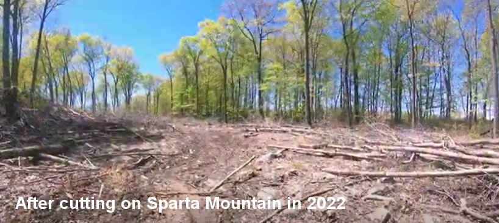
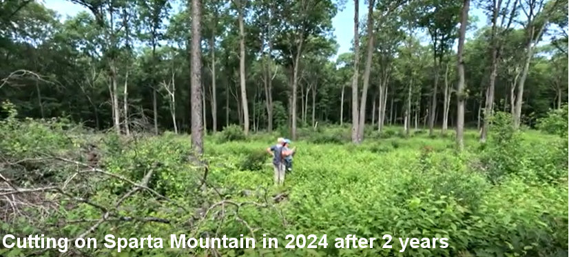
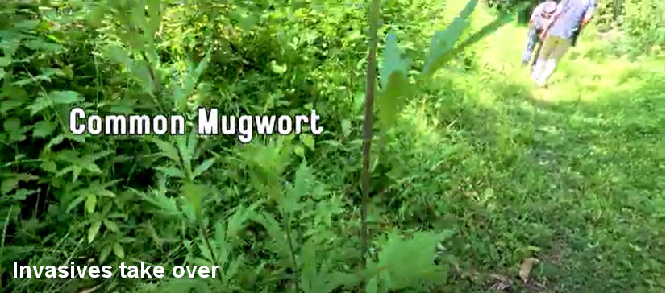

- Ph.D. in Physical Chemistry from Yale
- Research at Bell Labs and Princeton
fhstillinger@gmail.com
https://fhstillinger.github.io/FrankStillingerWebsite/
|
|
|
Dr. Frank H. Stillinger
| - Ph.D. in Physical Chemistry from Yale - Research at Bell Labs and Princeton fhstillinger@gmail.com https://fhstillinger.github.io/FrankStillingerWebsite/
|
|
| |
Example: Logging on Stand 9 on Sparta Mountain Wildlife Management Area in Sussex County
|

Just after logging in 2022 |

Two years later |

Invasives take over, no regeneration of desirable habitat |
- New Jersey Department of Environmental Protection (NJDEP) goal of the logging was "habitat restoration project aimed at promoting the growth of young oak and hickory trees and other native plants" but no young trees or native plants appeared or were planted.
- Monitoring and maintenance is never done so invasive species rapidly take over.
- Forestry "treatment" is almost always logging ("selective harvesting," "thinning," "prescribed burns," "Young Forest Initiative"), rarely removal of invasive species (insects, plants), establishing buffers, planting seedlings and native understory species.
- Young trees sequester less carbon than old trees for many years.
- Clearing patches in old forests disrupts habitat.
- Heavy machinery causes erosion, changes soil properties.
- Removing downed wood (logs, branches) depletes habitat.
- For references see the list at: https://njhighlandscoalition.org/cta/protecting-natural-forests/
- For NJDEP website about Sparta Mountain WMA see https://dep.nj.gov/njfw/sparta/